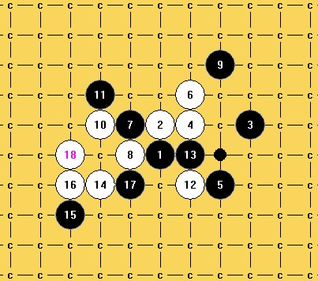

请教一下这路要怎么胜呢?
#1 请教一下这路要怎么胜呢? 作者：知布 发表时间：2012-3-1 21:24:14
看其他帖子得知这个
5
必败
,
想自己做地毯
剩下这路这个
15
杀不出
有两个
17
解决不掉
#2 Re:请教一下这路要怎么胜呢? 作者：山城刀客 发表时间：2012-3-1 23:41:42

我拆了很久，这个唯一19我也解决不了！没办法呀!
#3 Re:请教一下这路要怎么胜呢? 作者：五子痴 发表时间：2012-3-3 10:03:18
16如果这么挡的话，黑后面最强怎么走？感觉 这样的棋，白棋在左边是能做出点文章的。
#4 Re:请教一下这路要怎么胜呢? 作者：业余九级菜手 发表时间：2012-6-10 17:50:07
楼上这样白必.
#5 Re:请教一下这路要怎么胜呢? 作者：与郎共五 发表时间：2012-6-11 11:25:52
残月刀就是大残月？